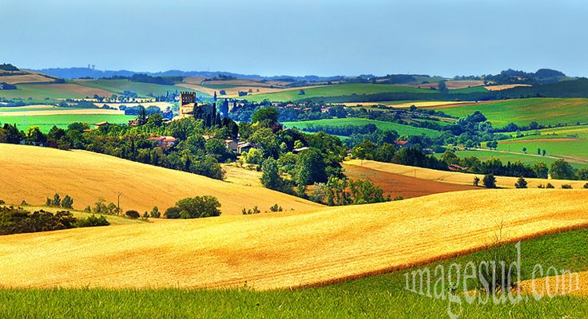

HEXAHOME
Make a simple house into a HexaHome.
wie zijn wij
Ik en mijn broer hebben dit bedrijf overgeërfd van onze ouders. Al jarenlang helpen we mensen met het vinden van hun droomhuis in frankrijk. We kennen de markt als geen ander en we weten wat er speelt. Bij HexaHome staat persoonlijke aandacht centraal. We nemen de tijd voor onze klanten en we luisteren naar hun wensen. We vinden het belangrijk dat je je welkom voelt bij ons en dat je je vertrouwd voelt met de aankoop van je huis. Bij ons kan het kopen van een huis volledig online verlopen. Of je nu op zoek bent naar een eenvoudig rijhuis, een luxueuze villa of een leuk appartement, HexaHome helpt je graag verder. We zijn er om je te ontzorgen en om je te helpen de juiste keuze te maken.

Ontmoet onze tevreden klanten
"Eindelijk de Parijse droom beleven!" - Chloe D. (Appartement, Montmartre)
Nooit gedacht dat ik een charmant klein juweeltje in het hart van Montmartre zou vinden. Zeker, de trappen zijn moordend, maar elke ochtend wakker worden met uitzicht op de Sacré-Coeur maakt het allemaal de moeite waard!

"Een stukje gelukzaligheid in de voorsteden vlakbij Parijs." - Marc L. (Rijwoning, Versailles)
Het stadsgeluid ingeruild voor het getjilp van vogels. Ik hou van de ruimte voor ons groeiende gezin en de hecht gemeenschapsgevoel. Weekendtripjes naar Parijs zijn nog steeds een fluitje van een cent!

"Wonen op het Franse platteland, net buiten de stad." - Isabelle B. (Villa, Val-d'Oise)
Knijp me, ik droom vast! Ons eigen kleine stukje paradijs met een zwembad en een wijngaard, maar toch dichtbij genoeg voor werk naar de stad reizen. Beste van twee werelden!